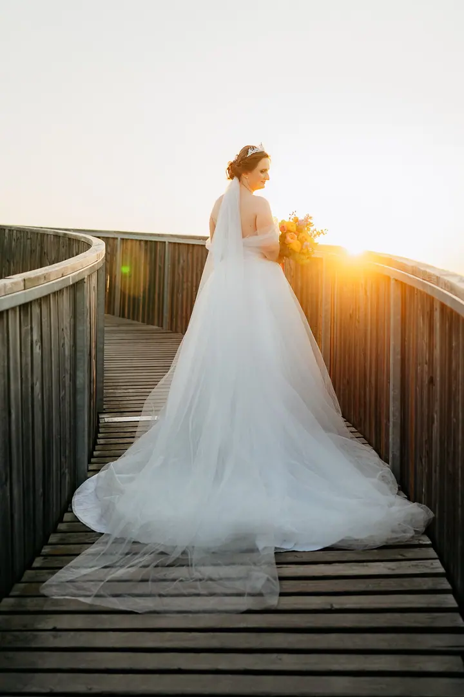

jedna
Svatby
Fotím celý svatební den, od příprav až po večer, po celé republice i v zahraničí. Jde mi o emoce a momenty, které vznikají samy, bez zbytečného aranžování.

Svatební a rodinná fotografka · Brno, celá Česká republika, zahraničí

Jmenuji se Petra Gruberová a jsem svatební a rodinná fotografka z Brna. Svatby fotím po celé České republice i v zahraničí a nejvíc mě baví emoce a drobné momenty, které během dne vzniknou samy.
Více o mně
Co fotím
jedna
Fotím celý svatební den, od příprav až po večer, po celé republice i v zahraničí. Jde mi o emoce a momenty, které vznikají samy, bez zbytečného aranžování.
Rodinné a těhotenské focení v přírodě, nejraději při západu slunce, nebo v Ateliéru Petra. Fotografie vybíráte vy, v ceně je barevná úprava a retuš.
Párové focení pro dva, klidně i jako předsvatební seznámení před velkým dnem. Fotím ho přirozeně a s citem, stejně jako svatby.
Focení miminka v prvních dnech v Ateliéru Petra. Jemné rodinné fotografie s detaily, na které se rychle zapomíná.

Váš příběh takový, jaký opravdu je.

Za objektivem
Věřím, že ty nejsilnější momenty vznikají nenápadně. Proto se na svatbě snažím být spíš tichou součástí dne než někým, kdo vás neustále rovná do póz. Chci, aby na fotkách byla vidět opravdovost, emoce a atmosféra, jakou ten den měl.
Kromě svateb fotím rodiny, těhotenství, páry a miminka. Ráda fotím venku při západu slunce, ale máte k dispozici i můj Ateliér Petra. Každý příběh je jiný a já ho chci zachytit takový, jaký opravdu je.
Působím v Brně, ale za vámi ráda přijedu kamkoli po republice i do zahraničí. Napište mi, kdy a kde se chystáte, a domluvíme se, jak bude focení vypadat.
Petra
Pošlete mi termín, místo a přibližný počet hostů. Podle toho vám připravím ceník a ověřím, jestli mám volno.
Probereme vaši představu o dni. Pokud chcete, můžeme si dát předsvatební focení, ať se před svatbou poznáme a na kameru si zvyknete.
Fotím celý den nenápadně a s citem, od příprav přes obřad až po společné focení ve zlatém světle.
Fotografie pečlivě vyberu, barevně upravím a vyretušuji. Pak vám je předám jako hotovou vzpomínku na váš den.
Portfolio
Otázky
Ceník svateb posílám na vyžádání. Rovnou mi napište termín, místo a přibližný počet hostů, ať vám můžu připravit nabídku na míru.
Pro rok 2026 mám volné sobotní termíny v říjnu a listopadu. Termíny v týdnu jsou možné na dotaz.
Ano. Sídlím v Brně, ale fotím po celé České republice i v zahraničí.
Balíček Basic s 15 fotografiemi stojí 4000 Kč, Lifestyle s 30 fotografiemi 6500 Kč. Fotky si vybíráte sami, každá další je za 200 Kč. Cena platí pro focení v přírodě nebo v Ateliéru Petra.
Napište pár vět o tom, co si představujete. · +420 739 677 796